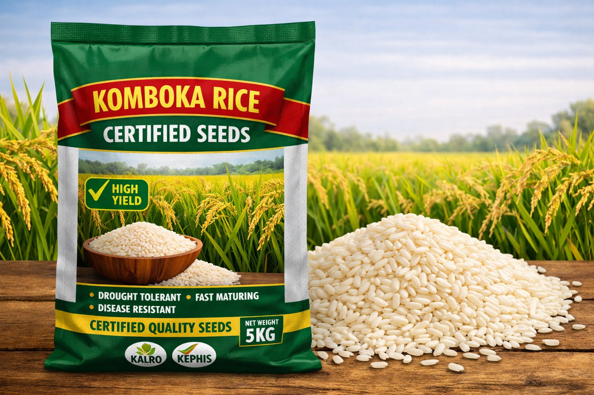
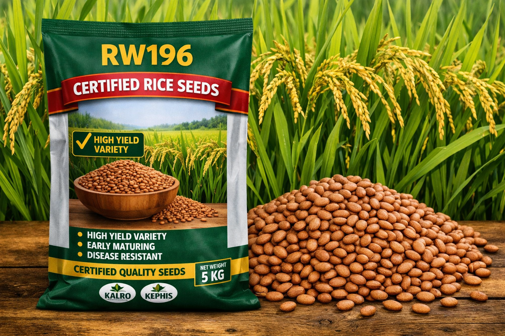
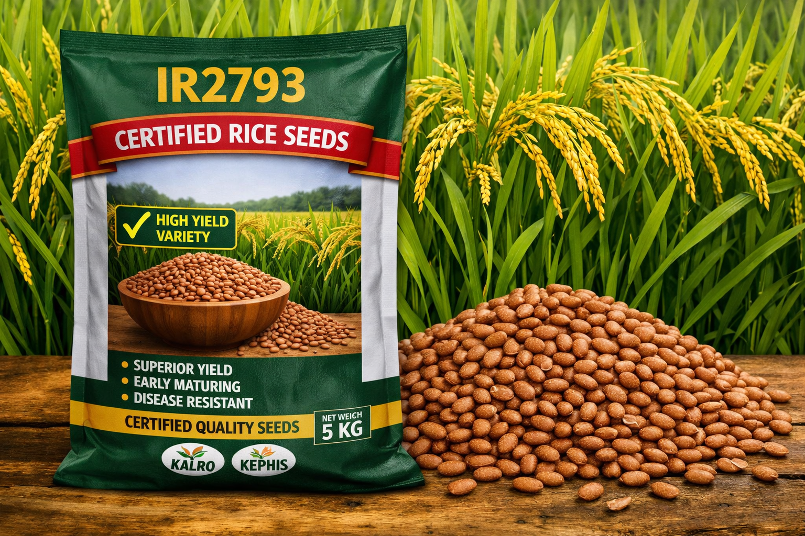
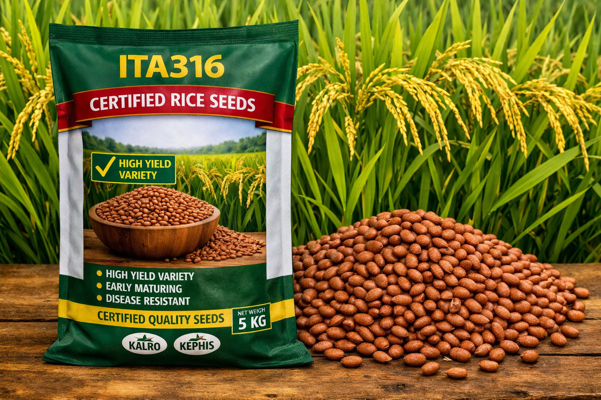

Seed Selection
Certified rice seed varieties for Ahero
Choosing the right certified rice variety is the first step to a healthy and productive crop. Explore varieties selected for Kenyan conditions and reliable yield.

Komboka
High-yielding variety with good tillering and strong resistance to blast and bacterial leaf blight.
Yield potential: 6-7 t/ha
Maturity: 110-120 days

BW196
Adapted to irrigated conditions and moderately resistant to pests. Good grain quality for local markets.
Yield potential: 5.5-6.5 t/ha
Maturity: 100-115 days

IR2793
Early maturing and drought tolerant, IR2793 helps farmers manage crop rotation and reduce water stress.
Yield potential: 5-6 t/ha
Maturity: 90-100 days

Sindano
Well-known in Kenya for uniform maturity and strong grain quality. It performs well with proper water management.
Yield potential: 5.5-6.5 t/ha
Maturity: 105-115 days

ITA316
Resistant to rice blast and bacterial leaf blight. ITA316 is a strong variety for irrigated systems and stable production.
Yield potential: 5.8-6.8 t/ha
Maturity: 108-118 days

Supa Rice
Popular for its high yield and attractive grain. Supa Rice is suitable for both local consumption and commercial milling.
Yield potential: 6-7.5 t/ha
Maturity: 110-120 days